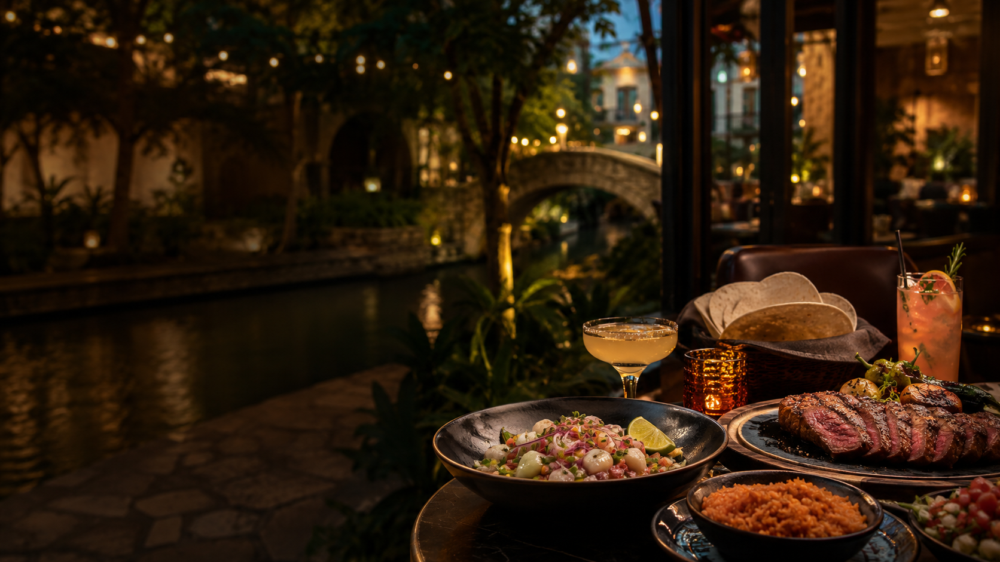

Where To Eat
Willie-approved picks, visitor-first lanes.
Downtown energy, resort corridors, Mexican, steak, seafood and ceviche, rooftop drinks, breakfast, and late-night moves — chosen for real San Antonio trips, not random lists.
Willie Approved
Research Pick
Needs Visit
Visitor lanes
Jump by situation
Start here
Choose your food move
Pick a lane, lock one anchor reservation, then stack the rest of the night around it. This keeps the plan premium without turning dinner into a spreadsheet.
First San Antonio meal
Lead with a table that feels like San Antonio from the start: polished Tex-Mex, steak, or a River Walk sequence.
Willie Approved picksBusiness dinner
Choose a room that handles clients cleanly, then layer drinks and a walk after dinner if needed.
SteakhousesDate night
Start with a strong dinner move, then finish with cocktails in a district built for pacing the night.
Pearl routeFamily-friendly
Bakery mornings, shareable menus, and logistics that work for mixed ages without friction.
Breakfast laneSeafood / ceviche
When the table wants bright flavor over heavy cuts, this lane gives you clean, bold seafood moves.
Seafood laneRiver Walk drinks
Build the handoff from drinks to dinner with practical stops that still feel like a San Antonio night.
Drinks laneDecision visuals
Choose the dinner energy
Use the room vibe to call the lane fast: polished and business-ready, or River Walk-adjacent with date-night momentum.

San Antonio night energy
Top picks
Willie Approved starting points
These six are the premium anchor moves. Start here when the meal has to land right the first time.
Soluna
Willie ApprovedThe strongest first recommendation when visitors want polished Tex-Mex with local credibility.
Best for: first city dinner, date night, and guests who want a confident San Antonio start.
Bohanan’s
Willie ApprovedClassic downtown polish for business tables, special dinners, and nights that need real weight.
Best for: business dinners, client meals, and formal downtown pacing.
J-Prime
Willie ApprovedHigh-end steakhouse energy with a polished room and strong splurge appeal.
Best for: north-side stays, polished groups, and steak-first nights.
Brasão
Willie ApprovedThe best rodizio lane when the group wants range, abundance, and a memorable table.
Best for: celebrations, hungry groups, and resort / business dinners.
El Bucanero
Willie ApprovedBest ceviche lane when the group wants seafood, spice, and a true local flavor-first meal.
Best for: seafood nights, adventurous groups, and visitors wanting something different.
Paesanos
Willie ApprovedReliable Italian anchor with broad appeal and useful River Walk compatibility.
Best for: mixed groups, classic dinner pacing, and visitors who want a comfortable win.
Use these lanes like a concierge playbook: clear anchors, fast comparisons, and readable decision strips so each food move lands cleanly.
Flavor anchor
Mexican & Tex-Mex
Start here when the first meal needs to feel like San Antonio, not a generic downtown dinner.

Mexican & Tex-Mex anchor
Lead the night with a flavor-first table that feels local and premium from the first round.
Willie Approved
Soluna
The strongest Willie Approved Mexican move when the night needs flavor, polish, and a real San Antonio feel.
Best for: first city dinner, date-night energy, and visitors who want the meal to feel memorable.
Willie Approved
La Fogata / La Fonda
La Fogata brings the patio energy; La Fonda keeps the classic San Antonio dining-room feel.
Best for: larger parties, familiar local pacing, and groups that want a dependable Mexican room.
Research Pick
Domingo / Ácenar
Useful downtown-adjacent options when the group wants Mexican flavor without leaving the River Walk orbit.
Best for: visitors staying near downtown hotels or convention corridors.
Also consider
Also consider: Rosario’s for King William energy, Mexico City as a Needs Visit research pick, and Casa Rio only as a classic River Walk name — not currently a Willie Approved food-first pick.
Prime cuts
Steakhouses
Business-ready rooms with clear differences in location, pacing, and spend level.
Willie Approved
Bohanan’s
Downtown anchor for serious hosting and polished service flow. The dependable call when a client table needs confidence.
Best for: executive dinners, downtown walkable tables.
Willie Approved
J-Prime
Modern north-side room with premium pacing and strong dinner-service rhythm.
Best for: polished splurge nights, resort-area business tables.
Research Pick
Ruth’s Chris
Useful backup for visitors who prefer recognizable premium steakhouse format and predictable pacing.
Best for: familiar-name comfort, backup reservations.
When to choose each: Downtown polish: Bohanan’s. North-side splurge: J-Prime. Familiar brand comfort: Ruth’s Chris.
Rodizio
Brazilian steakhouses
Use this lane for groups, celebrations, and visitors who want the table experience.
Willie Approved
Brasão
Top rodizio recommendation for quality, consistency, and premium room feel.
Best for: milestone dinners, high-appetite groups.
Research Pick
Chama Gaúcha
Polished service and dependable pacing for guests who want a classic rodizio sequence.
Best for: large groups, celebration alternatives.
Research Pick
Fogo de Chão
Familiar brand format with consistent table rhythm when group comfort skews toward known names.
Best for: mixed comfort levels, convention-friendly plans.
Difference maker: Best overall local feel: Brasão. Polished group room: Chama Gaúcha. Familiar national brand: Fogo de Chão.
Gulf & lime
Seafood & ceviche
Bright, spice-forward seafood choices when the table wants something sharper than another steak night.
Seafood / ceviche anchor
El Bucanero is the strongest Willie Approved ceviche lane when seafood is the reason for dinner.
Willie Approved
El Bucanero
Willie Approved best ceviche move in this lane when the table wants citrus-forward seafood and confident seasoning.
Best for: seafood-first dinners, shareable plates.
Research Pick
El Cevichero
Strong ceviche-forward alternate with a lighter pace that works well for lunch or early dinner.
Best for: flexible seafood plans, smaller groups.
Research Pick
Leche de Tigre
Peruvian-accented ceviche with composed plating and quieter room energy.
Best for: date-night seafood, refined casual dinners.
Seafood read: Start with El Bucanero when ceviche is the reason for dinner, then pivot to El Cevichero or Leche de Tigre for style and pacing preference.
Morning
Breakfast
Three dependable starts depending on whether your group wants pastry, heft, or Market Square culture.
Willie Approved
La Panadería
Quality-first bakery stop that consistently works for visitors and locals.
Best for: family mornings, pastry-led breakfast.
Research Pick
Alamo Biscuit
Hearty portions and straightforward ordering when the table needs a real fuel-up start.
Best for: active sightseeing days, bigger appetites.
Research Pick
Mi Tierra
Strong culture move in Market Square with bakery depth and flexible timing.
Best for: visitors wanting atmosphere and story.
Morning logic: La Panadería for premium pastry pacing, Alamo Biscuit for hearty starts, Mi Tierra for cultural Market Square utility.
Golden hour
River Walk drinks / rooftops / bar hop
Build a clean downtown sequence: classic cocktail anchor, modern stop, then rooftop finish.
Willie Approved
Esquire Tavern
Historic River Walk cocktail anchor with depth and room character.
Best for: classic cocktails, conversation-friendly tables.
Willie Approved
1Watson
Modern stop near the River corridor with cleaner design and calmer pacing.
Best for: pre-dinner drinks, modern lounge tone.
Willie Approved
Tenfold
Rooftop finisher for skyline views and a polished hotel setting.
Best for: sunset cocktails, elevated night caps.
Also consider
Also consider: Mad Dogs first for River Walk bar-hop energy; Sternewirth if the night shifts toward Pearl.
PEARL DISTRICT
Pearl food & lounge
Pearl works when the night needs to feel considered: dinner, drinks, and a walkable district without overcomplicating the plan.
Pearl district anchor
Pearl works when the night needs to feel considered: dinner, drinks, and a walkable district without overcomplicating the plan.
Willie Approved
Hotel Emma / Supper
Hotel Emma and Supper set the tone for polished business dinners, conference hosting, and premium date-night pacing.
Best for: business dinners, polished groups, date-night anchor plans.
Research Pick
Brasserie Mon Chou Chou
French brasserie atmosphere with strong date-night and polished-group utility in the heart of Pearl.
Best for: conference visitors, date nights, polished group dinners.
Research Pick
Ladino
Food-forward destination feel that still fits a walkable Pearl night without adding logistical complexity.
Best for: food-focused visitors, polished date nights, memorable Pearl dinners.
Also consider
Also consider: Amelia Social Lounge for drinks, Sternewirth when the night shifts toward Hotel Emma, and Larder for coffee, pastry, or market-stop utility.
Local utility
Local food rules that save the night
Use this checklist before you book, walk, or rideshare. It prevents most avoidable dinner misses.
- Reserve dinner before you start walking.
- Downtown: pick one anchor meal, not three backups.
- Pearl works best when dinner and drinks stay in the same corridor.
- River Walk bar hopping is easier when you choose one start point first.
- For big groups, choose the room before the menu.
- If the night is tired, close-and-easy beats “worth the ride.”
Ask The SA Plug for your exact food move
Tell us where you’re staying, party size, budget, food mood, and timing - we’ll point you to the right move with a clean plan you can use immediately.